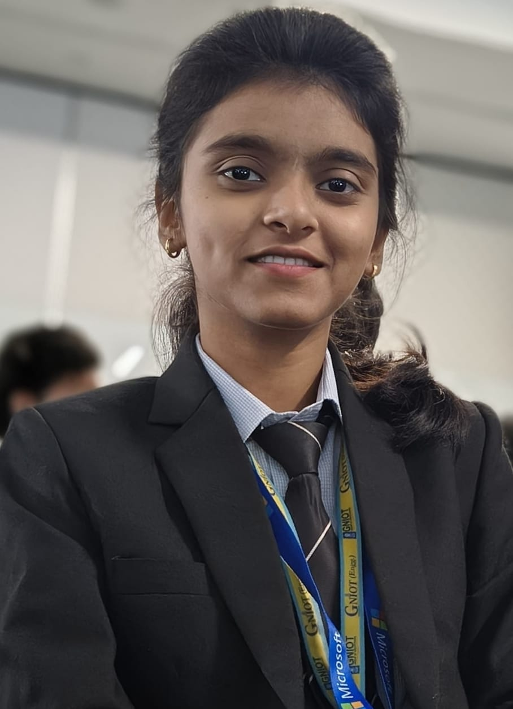

Resume Website
Designed and developed a personal resume website using pure HTML, showcasing education, technical skills, projects, certifications, and career objectives.

Email: raistuti284@email.com | GitHub: github.com/stutirai | LinkedIn: linkedin.com/in/stuti-rai
Artificial Intelligence and Data Science undergraduate at Greater Noida Institute of Technology (GNIOT) with interests in Software Development, Artificial Intelligence, Machine Learning, and Data Analytics.
Currently gaining hands-on experience as a Front-End Development Intern at QSkill while building projects and strengthening problem-solving and development skills.
To become a Software Engineer and contribute to impactful software solutions while continuously learning emerging technologies in Artificial Intelligence and Data Science.
June 2026 - July 2026
Selected as a Front-End Development Intern at QSkill.
Working on web development projects while gaining hands-on experience in HTML, CSS, responsive web design, and modern development practices.
Designed and developed a personal resume website using pure HTML, showcasing education, technical skills, projects, certifications, and career objectives.
Developed a Myntra-inspired front-end website using HTML and CSS, recreating the layout and user interface of the original platform.
Bachelor of Technology (Artificial Intelligence and Data Science)
2024 - 2028
CGPA: 8.41